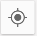
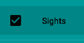
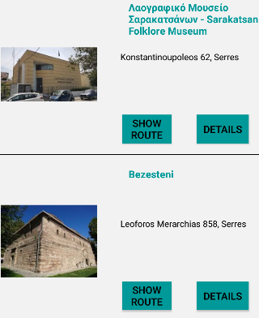
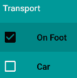

Σελίδα πληροφοριών
Όταν η εφαρμογή τρέξει στο κινητό σας θα βγουν 4 επιλογές κουμπιών.
Με την επιλογή 'Sights' η εφαρμογή "Happy Traveller" σας ανοίγει ένα νεό παράθυρό με αρκετές δυνατότητες.
- Επιλογή "NavBar"
Πατώντας την συγκεκριμένη ένδειξη που βρίσκεται επάνω αριστερά εμφανίζεται ένα Tab Menu με επιλογές για τον χρήστη.
- Επιλογή "Ενημέρωση"
Η συγκεκριμένη επιλογή εμφανίζεται επάνω αριστερά στον χάρτη και χρησιμοποιέιται σε περίπτωση που ο χρήστης
έχει βάλει πάνω στον χάρτη "Pins" πατώντας παρατεταμένα το κουμπί γίνεται η εκκαθάριση του χάρτη.
- Επιλογή "Location Zoom"

Η ένδειξη αυτή υπάρχει πάνω στον χάρτη δεξιά και κάνοντας ένα κλίκ σε αυτό το κουμπί αυτόματα η εφαρμογή μεταφέρει την οπτική
εικόνα στην τοποθεσία του χρήστη
- Επιλογή Εμφάνιση Αξιοθέατων

Η συγκεκριμένη επιλογή βρίσκεται μέσα στην NavBar επιλογή και κάνοντας ένα κλίκ στο κενό κουτί ο χρήστης επιλέγει να εμφανίσει στον χάρτη τις τοποθεσίες
από τα πάρκα,μουσεία και εκκλησίες.
- Επιλογή "List View"
Σε αυτήν την επιλογή μπορεί να πάει ο χρήστης είτε πατώντας στην επιλογή "LIST VIEW" που βρίσκεται δίπλα από την επιλογή
"MAP" είτε κάνοντας σκρόλ τον πάνω στον χάρτη.Εδώ η εφαρμογή δίνει την δυνατότητα στον χρήστη να δει μια λίστα με τα αξιοθέατα,
τις εκκλησίες αλλα και τα πάρκα που βρίσκονται στην πόλη που είναι.

- Επιλογή "Details"
Το κουμπί "Details" που εμφανίζεται κάτω απο κάθε φωτογραφία ενος αξιοθέατου δίνει την επιλογή στον χρήστη αυτόματα να αναζητήσει
πληροφορίες για αυτό.
- Επιλογή "Διαδρομή"
Πατώντας το κουμπί "show route" η εφαρμογή εμφανίζει στον χάρτη την διαδρομή που μπορεί να ακολουθήσει ο χρήστης για να φτάσει
στο συγκεκριμένο αξιοθέατο το οποίο έχει επιλέξει.Το κουμπί αυτό βρίσκεται κάτω απο κάθε αξιοθέατο.
- Επιλογή "Καιρός"
Η επιλογή αυτή βρίσκεται μέσα στο "NavBar".Πατώντας πάνω της ο χρήστης μπορεί να μάθει τον καιρό
για την τοποθεσία που βρίσκεται.
- Επιλογή "Μεταφορά"

Την επιλογή αυτή ο χρήστης μπορεί να την βρεί μέσα στο "NavBar" οπού του δίνεται η δυνατότητα να επιλέξει το μέσο που θα μεταφερθεί
σε ένα αξιοθέατο.
- Επιλογή "Pin"
Η συγκεκριμένη ένδειξη υπάρχει επάνω στον χάρτη δείχνει στον χρήστη την τοποθεσία που βρίσκεται ένα αξιοθέατο/πάρκο/εκκλησία
και κάνοντας κλίκ σε αυτό του δείχνει την διαδρομή προκειμένου να φτάσει σε αυτό το σημείο.
- Επιλογή "Share"
Τέλος ο χρήστης με το κουμπί "Share" το οποίο μπορεί να το βρεί μέσα στο "NavBar" έχει την δυνατότητα να κοινοποιήσει
την εφαρμογή μας και να την μοιραστεί με φίλους.